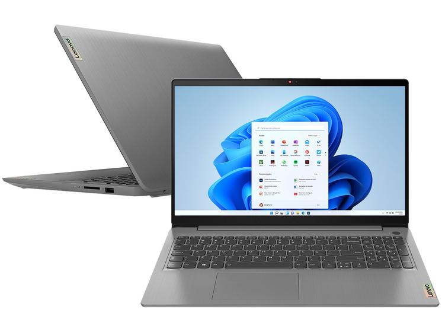

PRINCIPAIS PRODUTOS

Mouse Gamer com fio ALIENWARE | AW320M
O incrível acabamento na cor preta do AW320M complementa nosso icônico design industrial Alienware. Seis
botões totalmente programáveis ajudam você a mudar a jogabilidade sem esforço, precisão aprimorada e
mantem o jogo ininterrupto com placas D/E nítidas e identificáveis pelo toque criadas para resistir a 60
milhões de cliques.
R$ 275,00

Notebook Lenovo Ideapad 3i Intel
Notebook potente com tela LCD com resolução HD de 15,6", conta com o processador Intel Celeron N4020, sistema operacional Windows 11 Home e memória RAM de 4GB. Os detalhes de design bem pensados, como o obturador de privacidade de webcam e câmera de alta resolução HD-720p, completam o quadro. Com capacidade de 128GB de SSD, você terá espaço suficiente para seus arquivos.
R$ 2.500,00

Redragon Deimos K599-KRS QWERTY Outemu Red
teclado adaptado a todos os tipos de jogadores e isso os torna um verdadeiro reflexo da alta gama e qualidade que a empresa oferece. ua retroiluminação lhe dá um toque diferente ao seu dispositivo e destaca sua composição quando é usado em espaços mal iluminados, compatível: ps4 e xbox, ergonômico e adequado para vários usos, é resistente a salpicos com função anti-ghosting integrada.
R$ 750,00